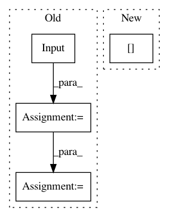

d3bdc5449964423387861c78edd9d890a81a5466,tests/layers/test_layers_recurrent.py,Layer_RNN_Test,setUpClass,#Any#,18
Before Change
print(cls.rnn_model)
cls.keras_net_in = tf.keras.Input(shape=[cls.num_steps, cls.embedding_size], batch_size=cls.batch_size)
cls.keras_net_rnn = tf.keras.layers.SimpleRNN(
cls.hidden_size, return_sequences=True, return_state=True,
kernel_initializer=tf.keras.initializers.Constant(value=0.1),
recurrent_initializer=tf.keras.initializers.Identity(),
use_bias=False,
bias_initializer=None,
)(cls.keras_net_in)
cls.keras_rnn_model = tf.keras.Model(inputs=cls.keras_net_in, outputs=cls.keras_net_rnn)
cls.keras_rnn_model.compile(optimizer="adam",
loss="categorical_crossentropy",
metrics=["accuracy"])
After Change
map1 = np.random.random([1, cls.num_steps])
map2 = np.random.random([cls.embedding_size, 1])
for i in range(cls.batch_size):
cls.data_y[i] = np.matmul(map1, np.matmul(cls.data_x[i], map2))
@classmethod
def tearDownClass(cls):
In pattern: SUPERPATTERN
Frequency: 3
Non-data size: 4
Instances
Project Name: tensorlayer/tensorlayer
Commit Name: d3bdc5449964423387861c78edd9d890a81a5466
Time: 2019-03-31
Author: jingqing.zhang15@imperial.ac.uk
File Name: tests/layers/test_layers_recurrent.py
Class Name: Layer_RNN_Test
Method Name: setUpClass
Project Name: shenweichen/DeepCTR
Commit Name: 7ab8bc6a70982aa79c36c20678c98becb7f291b1
Time: 2020-09-11
Author: wcshen1994@163.com
File Name: deepctr/models/dien.py
Class Name:
Method Name: DIEN
Project Name: keras-team/autokeras
Commit Name: 16474aee0c575e615c78d32f2a170c3d7f8f0082
Time: 2017-12-30
Author: jhfjhfj1@gmail.com
File Name: autokeras/graph.py
Class Name: Graph
Method Name: produce_model